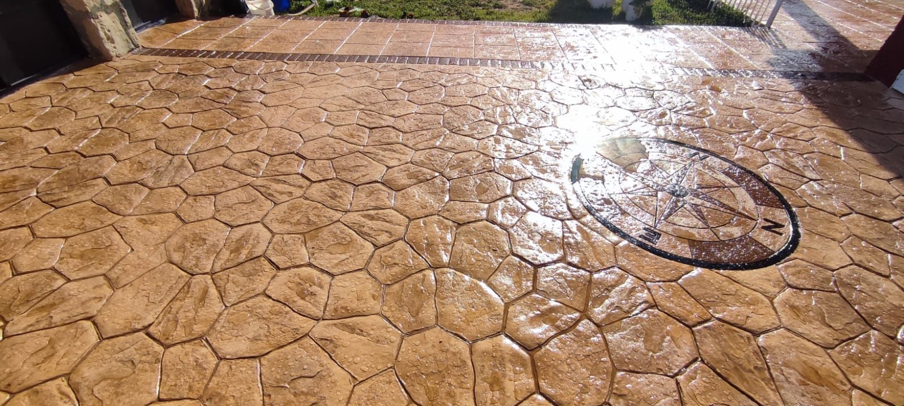

01
Hormigón y pavimento impreso
Una solución resistente para exteriores que reproduce piedra, losa, adoquín u otros acabados mediante moldes y coloración integrada.
- Patios, accesos y caminos
- Fincas, porches y zonas de piscina
- Cenefas, combinaciones de molde y motivos personalizados
- Sellado protector final
